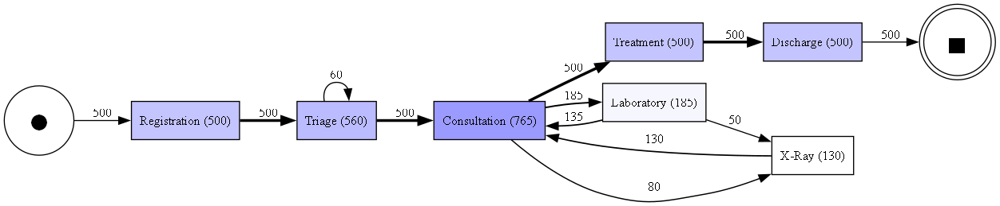

Clean Data First
Prioritizing data integrity, schema enforcement, and exploratory profiling before any modeling or visualization takes place.
Aspiring Data Analyst | Python | SQL | Data Analytics
Passionate about transforming ambiguous, raw data into verifiable business intelligence. Specializing in exploratory data analysis (EDA), automated data cleaning, SQL modeling, BigQuery warehousing, and analytical process discovery.

Leveraging computer science principles to build reliable, reproducible data analytics pipelines.
I am a Computer Science undergraduate at NRI Institute of Technology with a focused ambition toward Data Analyst and Data Analytics Intern positions. My journey started with core programming fundamentals and quickly evolved into a passion for transforming raw telemetry and unstructured event tables into actionable business clarity.
In business analytics, data is rarely clean or orderly. I focus on the hard, foundational work that precedes confident decision-making: rigorous schema validation, null mitigation, anomaly detection, SQL aggregation, and exploratory statistics. Rather than trusting probabilistic assumptions, I believe every number in a report must have traceable lineage back to its source.
My hands-on projects reflect this philosophy — from uncovering emergency care bottlenecks using event logs and process mining in CareFlow, to architecting deterministic sandboxed analytics engines in AI DataOS, to analyzing consumer purchasing dynamics in retail case studies.
Prioritizing data integrity, schema enforcement, and exploratory profiling before any modeling or visualization takes place.
Writing performant window functions, multi-table joins, and dbt staging views to organize complex relational data.
Translating quantitative trends into clear, executive-ready narratives that guide operational and strategic choices.
An accurate reflection of programming languages, analytics methodologies, databases, and developer tools in my workflow.
Authentic, verified technical implementations demonstrating data cleaning, warehouse staging, process discovery, and analytical systems design.
Discovered and analyzed emergency department patient workflows from chronological event logs using Python, PM4Py, Google BigQuery, and dbt. Identified clinical bottlenecks, transition waiting intervals, and re-triage loopbacks.

Engineered an autonomous data analytics kernel designed to eliminate LLM mathematical hallucinations. Separates probabilistic query planning from deterministic calculation through an AST-validated sandboxed execution runtime.
An exploratory retail analytics framework modeling product category revenue, discount elasticity, and customer purchasing frequency. Structures SQL queries and exploratory visualizations for e-commerce performance review.
Formal computer science training and technical problem-solving foundation.
Core curriculum covering Database Management Systems (DBMS), Data Structures & Algorithms, Operating Systems, Computer Networks, and Statistical Programming. Practical focus on data manipulation using Python and SQL.
Hands-on execution of data transformation pipelines, schema constraints, and data testing suites in cloud data warehouses.
Modeling process flows, variant detection, transition time bottlenecks, and Directly-Follows Graphs from synthetic healthcare logs.
I am actively seeking Data Analyst and Data Analytics Intern opportunities. If you have an opening, a collaborative project, or would like to review my technical work, feel free to reach out directly.